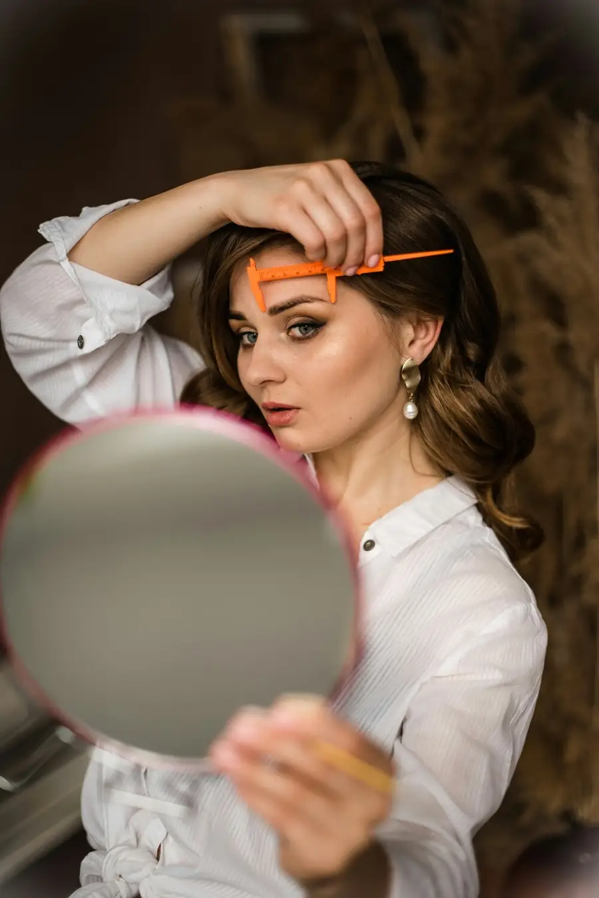

O que é visagismo de sobrancelhas?
Visagismo de sobrancelhas é a técnica de desenhar as sobrancelhas considerando o formato do rosto, a expressão e os traços individuais de cada pessoa. Em vez de seguir um modelo único, o visagismo personaliza o design para harmonizar e valorizar os traços naturais, criando equilíbrio facial. É a diferença entre uma sobrancelha "na moda" e uma sobrancelha que realmente combina com você.
Como o formato do rosto influencia o design da sobrancelha?
Cada formato de rosto pede um desenho diferente. Veja os principais:
- Rosto redondo: arcos mais marcados ajudam a alongar visualmente o rosto;
- Rosto quadrado: curvas suaves equilibram os ângulos mais fortes da mandíbula;
- Rosto alongado: sobrancelhas mais retas ajudam a "encurtar" e equilibrar;
- Rosto oval: considerado o mais harmônico, combina com a maioria dos formatos.
O visagista analisa essa proporção antes de definir o formato ideal — por isso a avaliação inicial é tão importante.

Como funciona o mapeamento de sobrancelhas?
O mapeamento é a etapa técnica do visagismo. Com paquímetro e linha, o profissional localiza os três pontos-chave da sobrancelha: o início (alinhado à lateral do nariz), o ponto mais alto (o arco) e o fim. Esses pontos são calculados a partir das proporções do seu rosto, garantindo simetria entre as duas sobrancelhas e um design verdadeiramente sob medida.
Descubra o design ideal para o seu rosto
Avaliação de visagismo GRÁTIS pelo WhatsApp · Studio premium no Tatuapé
Fazer Avaliação GrátisQual a diferença entre design comum e design com visagismo?
O design comum apenas remove os fios em excesso seguindo o formato que já existe. Já o design com visagismo redesenha a sobrancelha de forma estratégica, considerando harmonia facial, expressão e proporções. O resultado é personalizado e muito mais favorável ao rosto — é a diferença entre "limpar" a sobrancelha e realmente desenhá-la para você.
Visagismo serve para qualquer pessoa?
Sim. Justamente por ser personalizado, o visagismo funciona para qualquer formato de rosto, idade ou tipo de fio. O objetivo nunca é impor um padrão único, e sim valorizar a individualidade de cada pessoa. Inclusive em casos de fios ralos ou falhados, o visagismo orienta o melhor caminho — seja design, henna ou brow lamination.
Onde fazer visagismo de sobrancelhas no Tatuapé?
O Bella Beauty Club é um studio premium especializado em visagismo e design de sobrancelhas no Tatuapé, localizado no Edifício Platina (Rua Bom Sucesso, 220), a apenas 5 minutos do Metrô Tatuapé. Com nota 5,0 no Google, manobrista e café premium no prédio, cada atendimento começa com uma avaliação de design — gratuita pelo WhatsApp — para definir o desenho ideal para o seu rosto.
Sua sobrancelha desenhada sob medida
Avaliação personalizada · Sem compromisso · WhatsApp direto
Quero Minha Avaliação Grátis